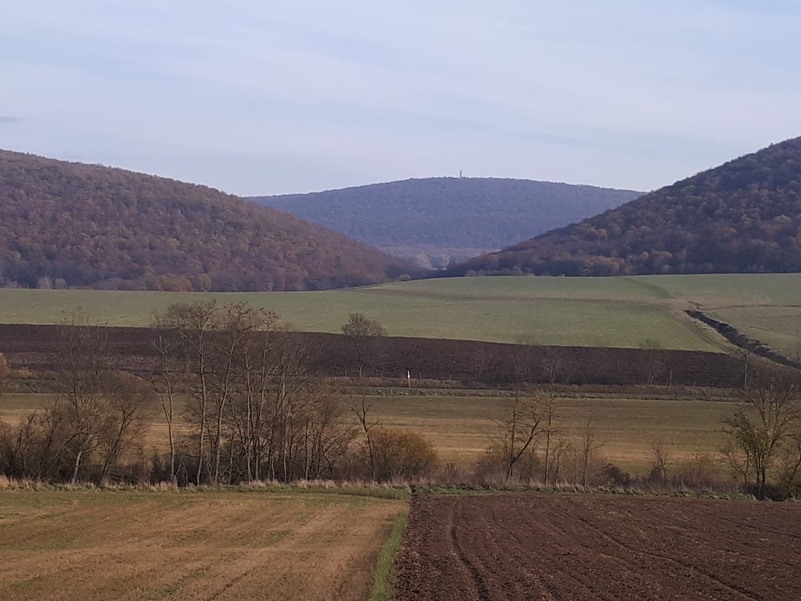
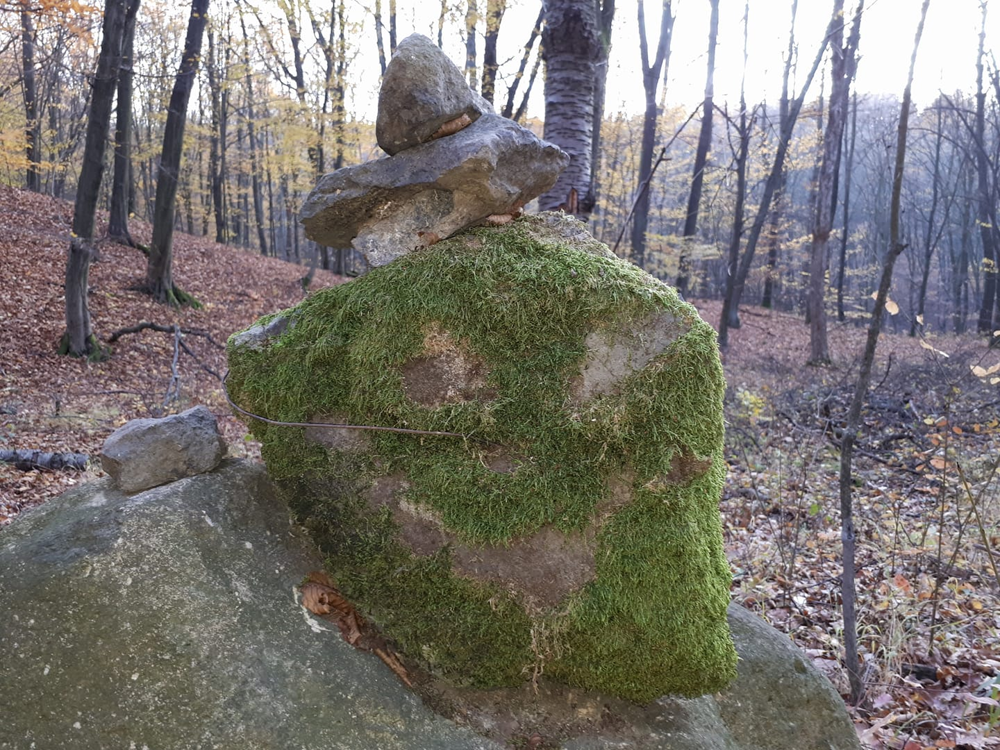
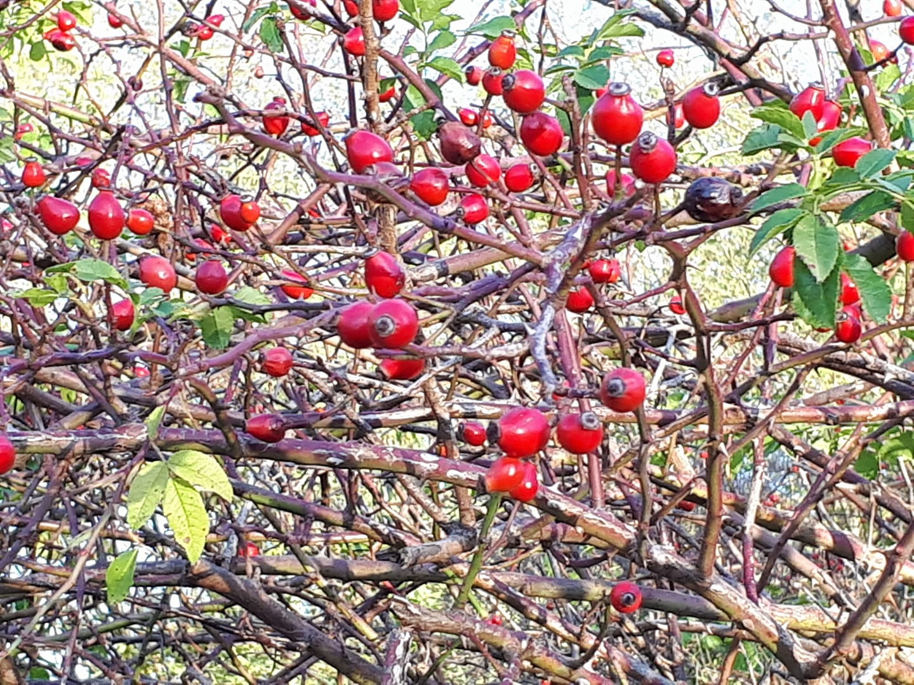
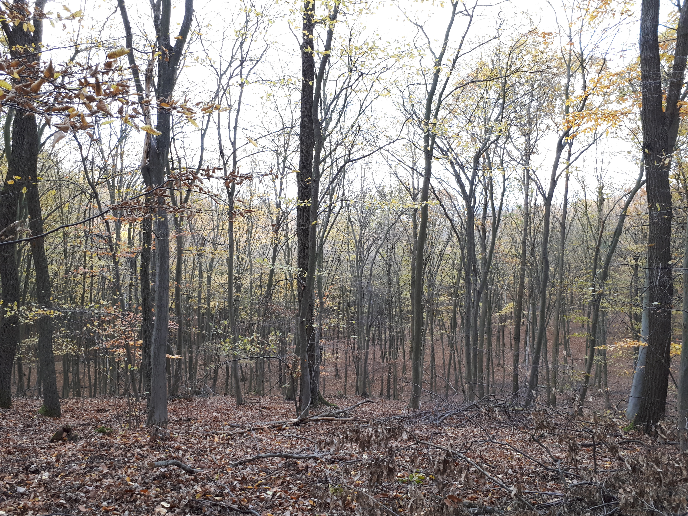
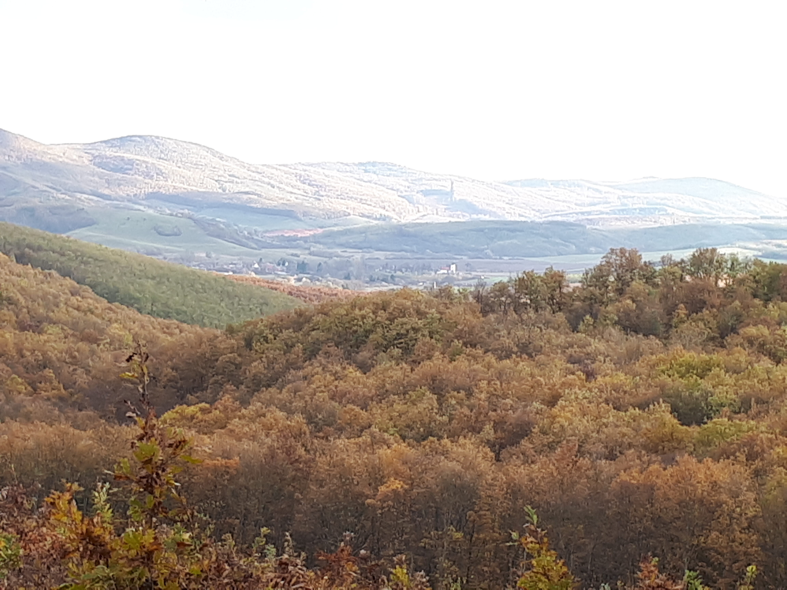

A Kéktúra története
1929-ben Turistaság és Alpinizmus XIX. évfolyam 6. számában Dr. Strömpl Gábor összefoglalta a turista útjelzésekkel kapcsolatos javaslatait. Ez év októberében a Magyar Turista Szövetség egy munkabizottság létrehozásáról döntött, amely a turistajelzések egységesítését vizsgálta. Tagjai: Horn K. Lajos a szövetség társelnöke, Lakner Károly és dr. Strömpl Gábor voltak. Két hónappal később, december 2-án a Szövetség az útjelzések egységesítésére kidolgozott tervet kisebb módosításokkal elfogadta, vonatkozó szabályzatát 1930. január 1-jei hatállyal életbe léptette. Határozatában úgy döntött, hogy az utak átfestését 5-10 esztendőn belül kell végrehajtani. 1930. március 3.-án dr. Strömpl Gábor bemutatta az országos jelzési rendszerbe tartozó úgynevezett „hosszú jelzések" tervét. Azt a tanácsülés tanulmányozásra kiadta az április 7-én tartott tanácsülésén az egyesületi „útjelzési tervek" elbírálásával együtt az Útjelző Bizottság saját hatáskörébe. Májusban kijelölte az egész országon átmenő kék útjelzés irányát és két végpontját és még az év során felosztotta a turistavidékek munkaterületeit tagegyesületei között.